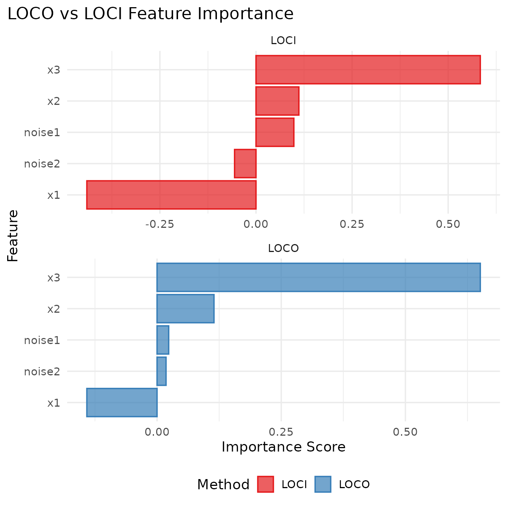

Example Data: Interaction Effects
To illustrate the key differences between LOCO and LOCI, we’ll use a data generating process with interaction effects:
\[y = 2 \cdot x_1 \cdot x_2 + x_3 + \epsilon\]
where \(\epsilon \sim N(0, 0.5^2)\) and all features \(x_1, x_2, x_3, noise_1, noise_2 \sim N(0,1)\) are independent.
Key characteristics:
- \(x_1, x_2\): Have NO individual effects, only interact with each other
-
\(x_3\): Has a
direct main effect on \(y\)
- \(noise_1, noise_2\): Pure noise variables with no effect on \(y\)
This setup highlights how LOCO and LOCI handle interaction effects differently.
Leave-One-Covariate-Out (LOCO)
LOCO measures feature importance by comparing model performance with and without each feature. For each feature, the learner is retrained without that feature and the performance difference indicates the feature’s importance.
For feature \(j\), LOCO is calculated as the difference in expected loss of the model fit without the feature and the full model: \[\text{LOCO}_j = \mathbb{E}(L(Y, f_{-j}(X_{-j}))) - \mathbb{E}(L(Y, f(X)))\]
Higher values indicate more important features (larger performance drop when removed).
task <- sim_dgp_interactions(n = 500)
learner <- lrn("regr.lm")
measure <- msr("regr.mse")
loco <- LOCO$new(
task = task,
learner = learner,
measure = measure
)
#> ℹ No <Resampling> provided
#> Using `resampling = rsmp("holdout")` with default `ratio = 0.67`.
loco$compute()
loco$importance()
#> Key: <feature>
#> feature importance
#> <char> <num>
#> 1: noise1 0.02343712
#> 2: noise2 0.01808013
#> 3: x1 -0.14135998
#> 4: x2 0.11463314
#> 5: x3 0.65082799Leave-One-Covariate-In (LOCI)
LOCI measures feature importance by training models with only each individual feature and comparing their performance to a featureless (baseline) model. This shows how much predictive power each feature provides on its own, above and beyond the optimal constant prediction.
Since this method only measures univariate associations, it is not recommend to use as a “real” feature importance method, but rather exists as a special case of a broader class of refitting-based importances methods. We illustrate it here for completeness and to highlight its limitation.
For feature \(j\), LOCI is calculated as the difference in expected loss of the featureless learner or constant model and the model including only the feature: \[\text{LOCI}_j = \mathbb{E}(L(Y, f_{\emptyset})) - \mathbb{E}(L(Y, f_j(X_{j})))\]
Higher values indicate more important features (better individual performance compared to baseline).
loci <- LOCI$new(
task = task,
learner = learner,
measure = measure
)
#> ℹ No <Resampling> provided
#> Using `resampling = rsmp("holdout")` with default `ratio = 0.67`.
loci$compute()
loci$importance()
#> Key: <feature>
#> feature importance
#> <char> <num>
#> 1: noise1 0.09848467
#> 2: noise2 -0.05579254
#> 3: x1 -0.44010340
#> 4: x2 0.11155710
#> 5: x3 0.58359019Understanding the Results
LOCO results interpretation:
- \(x_1\) and \(x_2\) show low importance because removing either one eliminates the interaction (\(x_1 \cdot x_2\) becomes zero)
- \(x_3\) shows higher importance due to its direct main effect
- This demonstrates LOCO’s limitation with interaction effects
LOCI results interpretation:
- \(x_1\) and \(x_2\) show low importance because individually they have no predictive power
- \(x_3\) shows high importance because it alone can predict \(y\) reasonably well
- This shows how LOCI focuses on individual feature contributions
Multiple Refits
Like PFI has iters_perm for multiple permutation
iterations, LOCO and LOCI support iters_refit for multiple
refit iterations per resampling iteration, which then also provide
standard deviations:
loco_multi = LOCO$new(
task = task,
learner = learner,
measure = measure,
resampling = rsmp("cv", folds = 3),
iters_refit = 3L
)
loco_multi$compute()
loco_multi$importance()
#> Key: <feature>
#> feature importance
#> <char> <num>
#> 1: noise1 -0.01212711
#> 2: noise2 -0.02467126
#> 3: x1 -0.08943524
#> 4: x2 -0.07556117
#> 5: x3 0.82401461
# Check individual scores with multiple refits
loco_multi$scores[1:10, ] |>
knitr::kable(digits = 4, caption = "LOCO scores per refit and resampling fold")| feature | iter_rsmp | iter_refit | regr.mse_orig | regr.mse_post | importance |
|---|---|---|---|---|---|
| noise1 | 1 | 1 | 3.8491 | 3.7693 | -0.0798 |
| noise1 | 1 | 2 | 3.8491 | 3.7693 | -0.0798 |
| noise1 | 1 | 3 | 3.8491 | 3.7693 | -0.0798 |
| noise1 | 2 | 1 | 4.2981 | 4.3134 | 0.0153 |
| noise1 | 2 | 2 | 4.2981 | 4.3134 | 0.0153 |
| noise1 | 2 | 3 | 4.2981 | 4.3134 | 0.0153 |
| noise1 | 3 | 1 | 5.3040 | 5.3321 | 0.0281 |
| noise1 | 3 | 2 | 5.3040 | 5.3321 | 0.0281 |
| noise1 | 3 | 3 | 5.3040 | 5.3321 | 0.0281 |
| noise2 | 1 | 1 | 3.8491 | 3.7563 | -0.0928 |
Comparing LOCO and LOCI
# Combine results for comparison
importance_combined <- rbind(
loco$importance()[, method := "LOCO"],
loci$importance()[, method := "LOCI"]
)
importance_combined <- importance_combined |>
dcast(feature ~ method, value.var = "importance")
importance_combined |>
knitr::kable(digits = 4, caption = "LOCO vs LOCI importance scores")| feature | LOCI | LOCO |
|---|---|---|
| noise1 | 0.0985 | 0.0234 |
| noise2 | -0.0558 | 0.0181 |
| x1 | -0.4401 | -0.1414 |
| x2 | 0.1116 | 0.1146 |
| x3 | 0.5836 | 0.6508 |
Interpreting the results:
- LOCO: Higher values indicate more important features (larger performance drop when removed)
-
LOCI: Higher values indicate more important
features (better individual performance compared to baseline)
- Positive values: feature performs better than featureless baseline
- Negative values: feature performs worse than featureless baseline

Different aggregation methods in LOCO
The examples above aggregates predictions on each test set
(obs_loss = FALSE), computing importance as the difference
of average losses using the measure’s default aggregation: \(\mathrm{mean}(L(Y, f_{-j}(X_{-j}))) -
\mathrm{mean}(L(Y, f(X)))\).
LOCO can also be computed using the alternative approach
(obs_loss = TRUE), which follows the original paper
formulation by aggregating observation-wise differences. The aggregation
function is taken from the measure’s aggregator field
(defaulting to mean if not specified). For the original
LOCO formulation with median of absolute differences, we can customize
the measure’s aggregator: \(\mathrm{median}(\{|L(y_i, f_{-j}(x_{i,-j}))| -
|L(y_i, f(x_i))|\}_{i=1}^n)\), where we use an mlr3 measure with
\(L_1\) loss on the observation level,
e.g regr.mae.
Setting obs_loss = TRUE provides access to individual
observation-level differences:
# Use macro-averaged approach with median aggregation
# Create MAE measure with median aggregator for original LOCO formulation
mae_median <- msr("regr.mae")
mae_median$aggregator <- median
loco_obs <- LOCO$new(
task = task,
learner = learner,
measure = mae_median, # MAE with median aggregator
obs_loss = TRUE
)
#> ℹ No <Resampling> provided
#> Using `resampling = rsmp("holdout")` with default `ratio = 0.67`.
loco_obs$compute()
loco_obs$importance()
#> Key: <feature>
#> feature importance
#> <char> <num>
#> 1: noise1 0.001274411
#> 2: noise2 0.003229655
#> 3: x1 0.001995886
#> 4: x2 -0.077958164
#> 5: x3 0.315709247
# Compare aggregated results
rbind(
loco$importance()[, method := "Set-wise MSE (measure default)"],
loco_obs$importance()[, method := "Observation-wise (median of diffs)"]
) |>
dcast(feature ~ method, value.var = "importance") |>
knitr::kable(digits = 4, caption = "Comparison of LOCO aggregation approaches")| feature | Observation-wise (median of diffs) | Set-wise MSE (measure default) |
|---|---|---|
| noise1 | 0.0013 | 0.0234 |
| noise2 | 0.0032 | 0.0181 |
| x1 | 0.0020 | -0.1414 |
| x2 | -0.0780 | 0.1146 |
| x3 | 0.3157 | 0.6508 |
The $obs_losses field provides detailed
observation-level information:
# Examine observation-wise data for first feature
feature_data <- loco_obs$obs_losses[feature == "x3"]
# Show structure
str(feature_data)
#> Classes 'data.table' and 'data.frame': 167 obs. of 10 variables:
#> $ row_ids : int 3 4 5 6 8 9 11 12 13 15 ...
#> $ feature : chr "x3" "x3" "x3" "x3" ...
#> $ iteration : int 1 1 1 1 1 1 1 1 1 1 ...
#> $ iter_refit : int 1 1 1 1 1 1 1 1 1 1 ...
#> $ truth : num 2.831 -0.293 -2.552 0.476 8.165 ...
#> $ response_ref : num 0.468 0.0826 -2.7257 0.7273 1.0292 ...
#> $ response_feature: num 0.828 0.247 -0.983 -0.334 -0.975 ...
#> $ loss_ref : num 2.363 0.376 0.173 0.251 7.136 ...
#> $ loss_feature : num 2.003 0.541 1.569 0.81 9.14 ...
#> $ obs_diff : num -0.36 0.165 1.396 0.559 2.004 ...
#> - attr(*, ".internal.selfref")=<externalptr>
# Display first few observations
head(feature_data) |>
knitr::kable(digits = 3, caption = "Observation-wise losses for x3")| row_ids | feature | iteration | iter_refit | truth | response_ref | response_feature | loss_ref | loss_feature | obs_diff |
|---|---|---|---|---|---|---|---|---|---|
| 3 | x3 | 1 | 1 | 2.831 | 0.468 | 0.828 | 2.363 | 2.003 | -0.360 |
| 4 | x3 | 1 | 1 | -0.293 | 0.083 | 0.247 | 0.376 | 0.541 | 0.165 |
| 5 | x3 | 1 | 1 | -2.552 | -2.726 | -0.983 | 0.173 | 1.569 | 1.396 |
| 6 | x3 | 1 | 1 | 0.476 | 0.727 | -0.334 | 0.251 | 0.810 | 0.559 |
| 8 | x3 | 1 | 1 | 8.165 | 1.029 | -0.975 | 7.136 | 9.140 | 2.004 |
| 9 | x3 | 1 | 1 | -0.124 | 0.415 | -0.205 | 0.539 | 0.081 | -0.458 |
Each row contains:
-
row_ids: Test set observation identifiers -
truth: Original target values
-
response_ref: Full model predictions -
response_feature: Reduced model predictions (without this feature) -
loss_ref/loss_feature: Individual losses from each model -
obs_diff: Observation-wise importance differences
Note that when using regr.mse (which aggregates with the
mean) for observation-wise losses, both approaches yield the same
result, but in slightly different ways:
set.seed(1)
resampling = rsmp("holdout")
resampling$instantiate(task)
loco_orig <- LOCO$new(
task = task,
learner = learner,
resampling = resampling,
measure = measure
)
loco_obsloss <- LOCO$new(
task = task,
learner = learner,
resampling = resampling,
measure = measure, # MSE uses mean by default
obs_loss = TRUE
)
rbind(
{
loco_orig$compute()
loco_orig$importance()[, method := "Set-wise"]
},
{
loco_obsloss$compute()
loco_obsloss$importance()[, method := "Observation-wise"]
}
) |>
dcast(feature ~ method, value.var = "importance")
#> Key: <feature>
#> feature Observation-wise Set-wise
#> <char> <num> <num>
#> 1: noise1 -0.06116845 -0.06116845
#> 2: noise2 -0.03037297 -0.03037297
#> 3: x1 -0.04521521 -0.04521521
#> 4: x2 0.02801885 0.02801885
#> 5: x3 1.10230314 1.10230314Classification Example with Probability Access
For classification tasks, the obs_losses field stores
predicted classes while preserving access to probabilities from the
original mlr3 prediction objects:
# Binary classification task
task_classif <- tgen("circle", d = 6)$generate(n = 200)
# Learner with probability predictions (required for accessing probabilities later)
learner_classif <- lrn("classif.rpart", predict_type = "prob")
# LOCO with observation-wise losses
loco_classif <- LOCO$new(
task = task_classif,
learner = learner_classif,
measure = msr("classif.ce"), # Classification error supports obs_loss (zero-one in this case)
obs_loss = TRUE,
features = c("x1", "x2") # Focus on just two features for clarity
)
#> ℹ No <Resampling> provided
#> Using `resampling = rsmp("holdout")` with default `ratio = 0.67`.
loco_classif$compute()
loco_classif$importance()
#> Key: <feature>
#> feature importance
#> <char> <num>
#> 1: x1 0.04477612
#> 2: x2 0.00000000
# Show classification importance
loco_classif$importance() |>
knitr::kable(digits = 4, caption = "LOCO importance for classification")| feature | importance |
|---|---|
| x1 | 0.0448 |
| x2 | 0.0000 |
Examine the observation-wise classification results:
# Look at observation-wise data
classif_data <- head(loco_classif$obs_losses, 8)
classif_data |>
knitr::kable(caption = "Observation-wise classification losses")| row_ids | feature | iteration | iter_refit | truth | response_ref | response_feature | loss_ref | loss_feature | obs_diff |
|---|---|---|---|---|---|---|---|---|---|
| 5 | x1 | 1 | 1 | B | B | B | 0 | 0 | 0 |
| 5 | x2 | 1 | 1 | B | B | B | 0 | 0 | 0 |
| 11 | x1 | 1 | 1 | B | B | B | 0 | 0 | 0 |
| 11 | x2 | 1 | 1 | B | B | B | 0 | 0 | 0 |
| 14 | x1 | 1 | 1 | B | B | B | 0 | 0 | 0 |
| 14 | x2 | 1 | 1 | B | B | B | 0 | 0 | 0 |
| 15 | x1 | 1 | 1 | B | B | B | 0 | 0 | 0 |
| 15 | x2 | 1 | 1 | B | B | B | 0 | 0 | 0 |
For classification, the response columns contain predicted classes
(factors). Note that $resample_result only contains the
reference model predictions (full model for LOCO, featureless for LOCI),
not the feature-specific models:
# Access feature-specific predictions (available with obs_loss = TRUE)
head(loco_classif$predictions)
#> feature iteration iter_refit prediction
#> <char> <int> <int> <list>
#> 1: x1 1 1 <PredictionClassif>
#> 2: x2 1 1 <PredictionClassif>
# Get probabilities for a specific feature and iteration
if (nrow(loco_classif$predictions) > 0) {
feature_pred <- loco_classif$predictions[1, ]$prediction[[1]]
# Access both predicted classes and probabilities
# Note: probabilities are only available because we used predict_type = "prob"
head(feature_pred$response) # Predicted classes
head(feature_pred$prob) # Probability matrix
}
#> A B
#> [1,] 0.06060606 0.9393939
#> [2,] 0.06060606 0.9393939
#> [3,] 0.11111111 0.8888889
#> [4,] 0.09523810 0.9047619
#> [5,] 0.80851064 0.1914894
#> [6,] 0.06060606 0.9393939
# Compare with reference model (full model for LOCO)
ref_pred <- loco_classif$resample_result$prediction(1)
head(ref_pred$prob) # Reference model probabilities
#> A B
#> [1,] 0.06060606 0.93939394
#> [2,] 0.06060606 0.93939394
#> [3,] 0.11111111 0.88888889
#> [4,] 0.09523810 0.90476190
#> [5,] 0.91891892 0.08108108
#> [6,] 0.06060606 0.93939394The $predictions field provides complete access to
feature-specific prediction objects:
-
feature: Which feature was left out (LOCO) or left in (LOCI) -
iteration: Resampling iteration -
iter_refit: Refit iteration within resampling
-
prediction: Complete mlr3 prediction object with responses, probabilities, etc.
This gives you full access to:
-
Feature-specific probabilities:
prediction$prob -
Feature-specific predicted classes:
prediction$response - Additional prediction data: Any other fields the learner provides
The observation-wise approach is particularly useful for:
- Robust aggregation: Using median instead of mean to reduce outlier influence
- Individual analysis: Examining which specific observations drive importance scores
- Distribution analysis: Understanding the variability in feature effects across observations
- Model debugging: Identifying problematic observations or prediction patterns